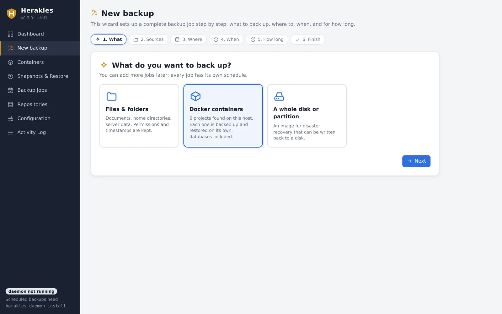
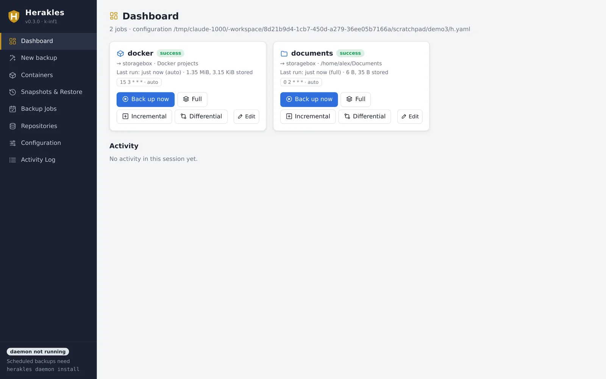
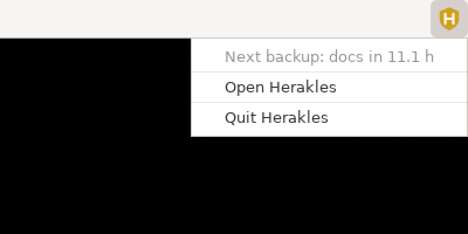
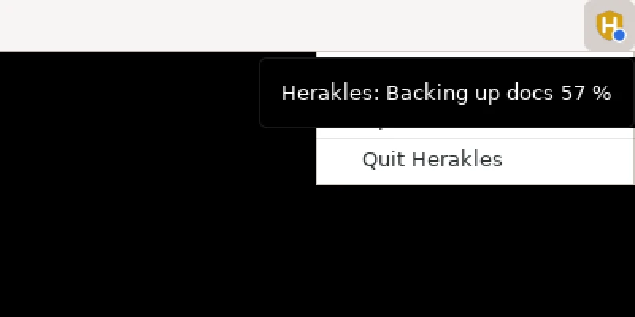
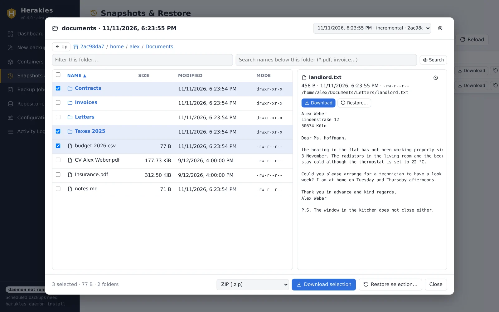
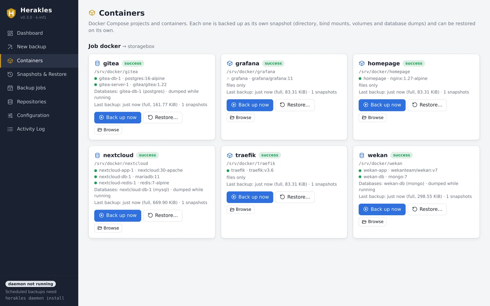
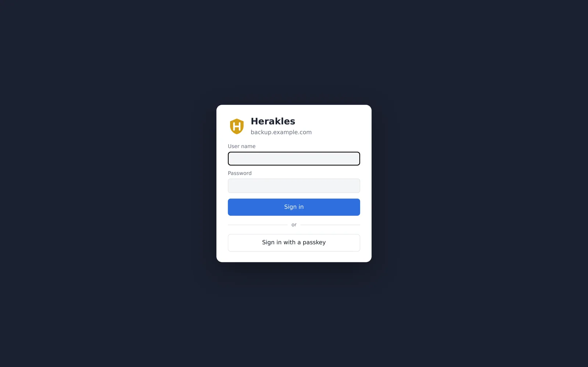
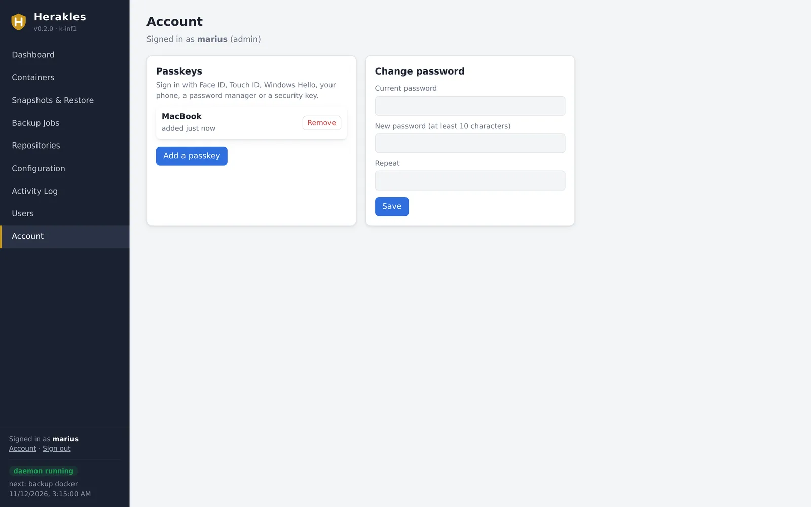
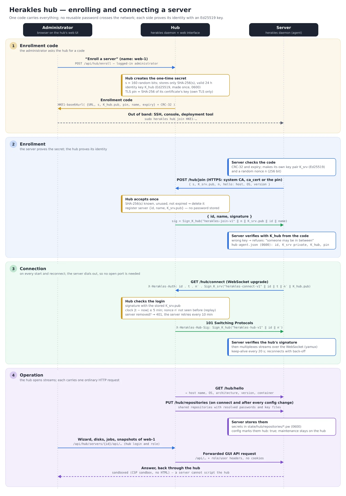
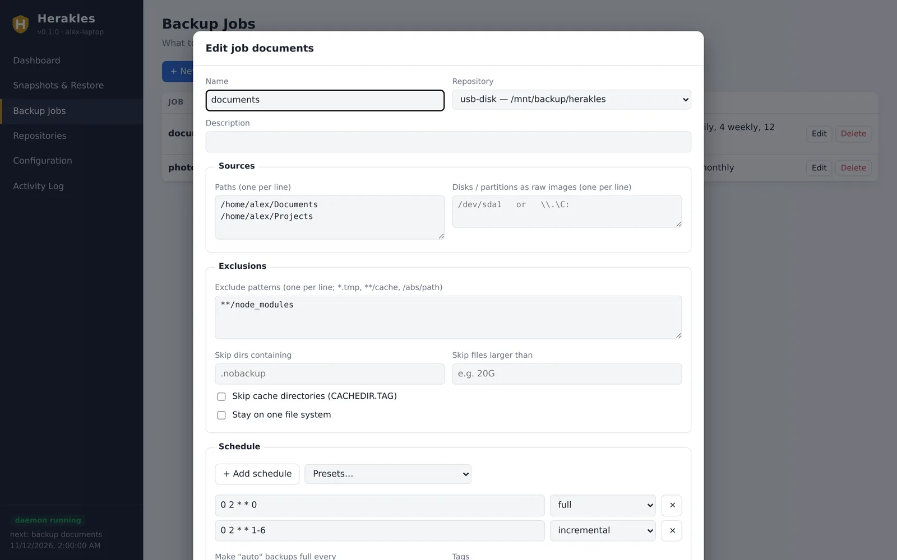

The Herakles guide
Everything from the first download to restoring a whole disk. This guide is for Herakles @VERSION@. Every command also has --help with examples.
Overview
Herakles copies your files, folders, disks or partitions into a repository: a folder on a disk, a network share, an SFTP server or a Herakles repository server. Inside the repository everything is split into chunks, deduplicated, compressed and encrypted. Each backup run creates a snapshot, a complete picture of the backed-up data at that moment, from which you can restore any file.
All of Herakles is one program file. Depending on how you start it, it is:
| Command | What it is |
|---|---|
herakles <command> | The command line interface (CLI): backup, restore, snapshots and so on. |
herakles gui | The desktop interface. It runs locally and opens in an app window or your browser. |
herakles tray | Scheduled backups plus the desktop interface plus a tray icon. The easiest way to use Herakles on a desktop. |
herakles tui | A full-screen terminal interface, for servers and SSH sessions. --wizard opens the backup wizard right away. |
herakles daemon | The background service that runs scheduled backups, installable as a systemd or Windows service. |
herakles server | The optional repository server that stores backups of other computers. |
All of them read and write the same YAML configuration file.
Installation
On Linux, install the package from the Herakles repository, which keeps it updated with the rest of the system. Everywhere else, download the file for your system from the download section; there is nothing else to install.
Linux packages
One command adds the signed repository for your distribution and installs the package:
curl -fsSL https://herakles.kloeck-it.de/install.sh | sudo sh
Then it asks how you will use Herakles and sets that up:
- Desktop (suggested when the computer has a graphical login): the system service is shared with you (
herakles daemon desktop on), and on request the tray icon starts at every login. Open Herakles from the applications menu; the wizard guides you through the first backup. Backups run as root, so whole disks and all files work. - Desktop, only my own files: Herakles runs as you, with the tray icon at login.
- Server without a desktop: the backup wizard opens in the terminal (
herakles tui --wizard); afterwards the service is enabled and started. - Nothing now: only install, and print the next steps.
Without a terminal, or to skip the questions, set the answer in advance: curl -fsSL https://herakles.kloeck-it.de/install.sh | sudo HERAKLES_MODE=server sh (desktop, user, server or none; add HERAKLES_USER=name for the desktop modes if you are not using sudo).
It supports Debian and Ubuntu (apt), Fedora, RHEL, Rocky and Alma Linux (dnf), openSUSE (zypper) and Arch Linux (pacman), on x86‑64, ARM64 and ARMv7. Repository metadata and packages are signed with the key 1035012D5247A80FD7988DFDE64EFE5644EE8226 (herakles.asc, binary: herakles.gpg). To set it up by hand:
# Debian / Ubuntu sudo install -d -m 755 /etc/apt/keyrings curl -fsSL https://herakles.kloeck-it.de/herakles.gpg | sudo tee /etc/apt/keyrings/herakles.gpg >/dev/null echo "deb [arch=$(dpkg --print-architecture) signed-by=/etc/apt/keyrings/herakles.gpg] https://herakles.kloeck-it.de/apt stable main" \ | sudo tee /etc/apt/sources.list.d/herakles.list sudo apt update && sudo apt install herakles # Fedora / RHEL / Rocky / Alma sudo curl -fsSL -o /etc/yum.repos.d/herakles.repo https://herakles.kloeck-it.de/rpm/herakles.repo sudo dnf install herakles # openSUSE sudo zypper addrepo https://herakles.kloeck-it.de/rpm/herakles.repo sudo zypper install herakles # Arch Linux: add to /etc/pacman.conf, then trust the key [herakles] Server = https://herakles.kloeck-it.de/arch/$arch curl -fsSL https://herakles.kloeck-it.de/herakles.asc | sudo pacman-key --add - sudo pacman-key --lsign-key 1035012D5247A80FD7988DFDE64EFE5644EE8226 sudo pacman -Sy herakles
The package installs /usr/bin/herakles, a menu entry (“Herakles”), shell completions for bash, zsh and fish, and the system service herakles.service, which is not enabled. On a desktop, run sudo herakles daemon desktop on and open Herakles from the menu: backups then run as root in the service, so they can include whole disks and system files (details). For only your own files, just open Herakles from the menu, or use the tray (herakles tray --open). On a server, set up /etc/herakles/herakles.yaml (for example with sudo herakles tui), then run sudo systemctl enable --now herakles. Package updates restart a running service. Removing the package stops the service; configuration and repositories are kept.
Linux (single file)
curl -LO https://herakles.kloeck-it.de/downloads/herakles-linux-amd64 # or -arm64 / -armv7
curl -LO https://herakles.kloeck-it.de/downloads/SHA256SUMS
sha256sum -c --ignore-missing SHA256SUMS
sudo install -m 755 herakles-linux-amd64 /usr/local/bin/herakles
herakles version
Not sure which file? Run uname -m: x86_64 means amd64, aarch64 means arm64, armv7l means armv7.
Windows
Download herakles-setup.exe and run it. One setup covers x64 and ARM64 Windows; it installs to C:\Program Files\Herakles, adds “Herakles” to the Start menu and an uninstaller to Settings → Apps, and asks how Herakles is used:
- Whole computer (recommended): backups run in the Windows service as LocalSystem, so they reach every file and whole disks, also when nobody is logged in. The Herakles window and tray icon of the user who installed it open the service. The configuration goes to
%ProgramData%\Herakles\herakles.yaml, a folder only administrators and the service can read, because it holds repository passwords. An optional hub enrollment code attaches the computer right away. - Only my own files: Herakles runs as you while you are logged in, with your configuration in
%APPDATA%\Herakles. - Install only.
It adds Herakles to the Start menu, can add Herakles to the PATH and start the tray icon at login. (Without the setup, the first start of the tray adds a Start menu entry for you.) After that, the backup wizard in the Herakles window sets up the first backup; no console is needed. Running a newer setup updates Herakles and restarts the service, keeping all settings. Uninstalling removes the service, autostart and PATH entries; it keeps the configuration unless you tick “Delete the service's configuration and logs” (your backups in the repositories are never touched). For other users of the computer: herakles daemon desktop on --user NAME in an administrator terminal.
Unattended installation, for example from a deployment tool:
herakles-setup.exe /S /MODE=desktop # desktop = whole computer, user = own files, none
herakles-setup.exe /S /MODE=desktop /HUB=HKE1-… /NAME=office-pc /USER=CORP\alex
herakles-setup.exe /S /NOAUTOSTART /NOPATH /D=D:\Apps\Herakles
"C:\Program Files\Herakles\uninstall.exe" /S [/PURGE]
/USER names the account whose window opens the service (default: the user logged in to the session). The setup and the program are not code-signed yet, so SmartScreen may warn about an unknown publisher: choose More info → Run anyway.
Without the setup, the single file works as well: download herakles-windows-amd64.exe (or -arm64), rename it to herakles.exe and move it to a permanent folder such as C:\Program Files\Herakles. If you plan to install the Windows service, the file must stay where it is. To call it from any terminal, add the folder to your PATH.
(Get-FileHash .\herakles.exe).Hash # compare with SHA256SUMS
.\herakles.exe version
macOS (experimental)
The Apple Silicon build has not been tested on a Mac yet. CLI, terminal UI and GUI are expected to work; the tray icon is not available. Remove the download quarantine with xattr -d com.apple.quarantine herakles-macos-arm64.
Updates
Herakles looks for a new release twice a day (from version 0.11.0 on). When there is one, you get a desktop notification, the tray menu shows Update to vX.Y.Z, and the Herakles window shows a notice with Install update. Nothing is installed until you choose it. Herakles then updates the way it was installed:
- Linux package: with apt, dnf, zypper or pacman, asking for the administrator password (pkexec). The package restarts the system service.
- Windows setup: downloads the new setup and runs it; Windows asks for administrator rights. The setup restarts the service.
- Single file (where you may write it): replaces the program file.
Afterwards the tray restarts with the new version and opens a new window. While a backup runs, the update is refused, so nothing is cut off. The release announcement (downloads/latest.json) must carry the signature of the Herakles release key built into the program, and every download must match its SHA‑256 checksum; otherwise nothing is installed.
On servers, the window of the service and the web interface only show that an update exists. Install it in a terminal:
herakles update --check # is there a new version? sudo herakles update # show it, ask, install; restarts the service sudo herakles update --yes # without asking (scripts)
To turn the check off, set updates: {check: false} in the configuration.
Updating by hand and removing
Packages also update with the system, the Windows setup by running a newer setup. For the single file, replace the file and restart whatever runs it (the tray, or herakles daemon restart for the service). Repositories and configuration stay compatible. To remove Herakles, run herakles tray autostart off and herakles daemon uninstall if you used them, then delete the file. With the Windows setup, use Settings → Apps instead. Your configuration lives in the file shown by herakles config path; your backups stay in their repositories.
Quick start
With the desktop interface
The quickest way is the backup wizard: start the interface and click New backup (or Get started on the empty dashboard). It asks six things — what, sources, where, when, how long, name — and then creates the repository, saves the job and starts the first backup. The terminal UI has the same wizard on the key w.

Or set it up by hand:
- Start Herakles in the tray and open its window:
herakles tray --open
On a computer without a system tray, useherakles guiinstead. - Open Repositories → Add repository. Give it a name (for example
usb-disk), a location such as/media/alex/Backup/herakles,D:\Backups\heraklesor\\nas\backup\herakles, and choose how it is unlocked. A password file lets backups run unattended; with ask, Herakles asks for the password in the interface. Save, then click Initialize. - Open Backup Jobs → New job. Pick the repository, enter the folders to back up, add exclusions if you like and choose a schedule from Presets (for example “Daily, full on Sunday”). Set the retention, for example 7 daily, 4 weekly, 12 monthly.
- On the Dashboard, click Back up now. The first backup reads everything; later ones only read what changed.
- Under Configuration, tick Start Herakles in the system tray when I log in. From now on, backups run on schedule whenever you are logged in.

With the command line
# 1. Store the repository password in a file only you can read mkdir -p ~/.config/herakles read -rs PW && printf '%s\n' "$PW" > ~/.config/herakles/password && chmod 600 ~/.config/herakles/password # 2. Define a repository and a job herakles config set repo usb-disk /media/alex/Backup/herakles \ --password-file-path ~/.config/herakles/password herakles config set job home --repository usb-disk --path ~ \ --exclude '**/.cache' --exclude '**/node_modules' \ --schedule '0 2 * * 0=full' --schedule '0 2 * * 1-6=incremental' \ --yaml 'retention: {keep_daily: 7, keep_weekly: 4, keep_monthly: 12}' # 3. Create the repository and run the first backup herakles init --repo usb-disk herakles backup home # 4. Look at the result herakles snapshots herakles ls latest ~/Documents # 5. Run the schedules in the background (pick one) herakles tray autostart on # desktop: tray icon at login sudo herakles daemon install && sudo herakles daemon start # server: system service
Instead of config set you can write the file yourself: herakles config init writes a fully commented example, and herakles config edit opens it in your editor and validates it when you save.
Keep your password safe, and somewhere else too. Without the password (or key file), nobody, including you, can read the backups. Store a copy in a password manager or on paper.
Without a configuration
For a one-off backup you don't need a configuration file at all:
herakles init --repo /mnt/usb/backup herakles backup --repo /mnt/usb/backup --path ~/Projects --path ~/Documents herakles snapshots --repo /mnt/usb/backup
Concepts
- Repository
- Where backups are stored. One repository can hold backups of many jobs and many computers; identical data is stored only once across all of them.
- Job
- What to back up (folders and/or disks), into which repository, when, and how long to keep it.
- Snapshot
- The result of one backup run: a complete, read-only view of the job's data at that time, identified by a short ID such as
2939cbe7.latestmeans the newest one. - Backup type
- How much work a run does to find changes:
full,incremental,differentialorauto. See backup types. - Retention
- Rules that decide which old snapshots are kept. Removing a snapshot is called forget; freeing the space it used is called prune.
- Daemon
- The background process that runs jobs on their schedules: the tray or the system service.
Each backup is one file. An incremental backup only adds the chunks that are new: a daily backup of 500 GB where 2 GB changed adds a file of about 2 GB, and every snapshot is still complete. Forgetting a snapshot never breaks another one: files that later backups still need are kept until those are gone too.
Repositories
A repository is created once with herakles init (or Initialize in the GUI). It is defined in the configuration like this:
repositories:
- name: usb-disk
location: /media/alex/Backup/herakles
password_file: ~/.config/herakles/password
Storage locations
| Where | Location | Notes |
|---|---|---|
| Local disk, USB disk | /mnt/backup/heraklesD:\Backups\herakles | The folder is created by init. |
| Mounted NFS or CIFS share | /mnt/nas/herakles | Mount the share as usual; Herakles sees a normal folder. |
| Windows share (UNC) | \\nas\backup\herakles | Uses the Windows login. For the Windows service, the service account needs access. |
| SMB/CIFS without mounting | smb://WORKGROUP;backup@nas.local/backups/herakles | smb://[DOMAIN;]user@host/share/path. Set the share password in remote.password_env or remote.password. |
| SFTP | sftp://backup@host.example.com/srv/herakles | Uses ssh-agent, ~/.ssh keys and known_hosts, or remote.identity_file / remote.known_hosts. |
| Herakles server | herakles://backup.example.com:8443/alex-laptop | HTTPS; herakles+http:// for plain HTTP on a trusted network. See repository server. |
Examples with the remote settings:
repositories:
- name: nas
location: smb://WORKGROUP;backup@nas.local/backups/herakles
password_file: ~/.config/herakles/password # repository password
remote:
password_env: NAS_PASSWORD # SMB account password
- name: offsite
location: sftp://backup@vps.example.com/srv/herakles
password_file: ~/.config/herakles/password
remote:
identity_file: ~/.ssh/id_ed25519
Passwords and key files
A repository is unlocked with a password, a key file, or both (then you need both). Herakles looks for the password in this order:
password: written directly in the configuration (discouraged);password_file: the first line of a file (protect it withchmod 600);password_env: an environment variable;password_command: the output of a command, for examplepass show backup/heraklesor a secret manager;- the
HERAKLES_PASSWORDenvironment variable; - otherwise the CLI, TUI and GUI ask you. The system service cannot ask, so it needs one of the sources above. The tray can ask: the repository shows as locked until you enter the password in the window.
Key files are random 256-bit keys:
herakles key generate ~/.config/herakles/repo.key herakles init --repo usb-disk --key-file ~/.config/herakles/repo.key # password + key file herakles init --repo /mnt/usb --generate-key-file ~/.herakles.key # create and use one
In the configuration, set key_file: on the repository. A repository can have several keys, for example your own password plus an emergency key file kept in a safe:
herakles key list --repo usb-disk
herakles key add --repo usb-disk --label "emergency" --new-key-file /media/safe/emergency.key --no-password
herakles key passwd --repo usb-disk # change the password of the key you use
herakles key remove --repo usb-disk <KEY-ID>
If all passwords and key files of a repository are lost, the data cannot be recovered. There is no back door.
On the Repositories page, every repository has a bar of its storage: the space this repository takes, other data on the same disk, share or server, and what is free (on a Herakles server with a quota: the quota). It needs no password; herakles stats shows the free space too. SFTP servers report their capacity only when they offer the statvfs extension (OpenSSH does).
Repository options
| Option | Meaning |
|---|---|
compression | auto (default: zstd, skipping incompressible data), none, zstd, zstd:1…zstd:4 (faster…smaller), or auto,zstd:3. |
pack_size_mib | Size of the pack files data is stored in (default 16). Larger packs mean fewer files on the storage. |
connections | Parallel connections to remote storage. |
upload_limit_kib, download_limit_kib | Bandwidth limits in KiB/s, for example 5120 for 5 MiB/s. |
maintenance.prune_schedule | Cron schedule for freeing unused space (see maintenance). |
maintenance.check_schedule, check_read_data | Cron schedule for integrity checks, optionally downloading a share of the data such as 10%. |
chunker | min_kib, avg_kib, max_kib: chunk sizes, fixed when the repository is created. The defaults suit almost everyone. |
Backup jobs
jobs:
- name: home
description: Home directory
repository: usb-disk
paths: [/home/alex]
exclude: ["**/.cache", "**/node_modules", "*.tmp", /home/alex/Downloads]
exclude_caches: true
full_interval: 7d
schedule:
- { cron: "0 2 * * 0", type: full }
- { cron: "0 2 * * 1-6", type: incremental }
retention: { keep_daily: 7, keep_weekly: 4, keep_monthly: 12 }
Sources
paths: files and folders. Herakles stores permissions, owner, timestamps, symlinks, FIFOs, device nodes and, on Linux, extended attributes.devices: whole disks or partitions as raw images, for example/dev/sda1,/dev/nvme0n1,\\.\C:or\\.\PhysicalDrive0. See disks and partitions.tags: labels added to every snapshot of the job, useful for filtering and forkeep_tags.
Backing up system folders or other users' files needs root (Linux) or administrator rights (Windows); use the system service for that. On a Linux desktop, sudo herakles daemon desktop on lets you set it up from the normal Herakles window; on Windows, the setup's “Whole computer” option does the same.
Exclusions
| Option | Example | Effect |
|---|---|---|
exclude | *.tmp | Any file or folder named like this, anywhere. |
**/node_modules | Folders of this name at any depth. | |
/home/*/Downloads | An absolute path (with wildcards). | |
exclude_if_present | [.nobackup] | Skip folders that contain a file with this name. |
exclude_caches | true | Skip folders marked with a CACHEDIR.TAG file (browsers and build tools set these). |
exclude_larger_than | 20G | Skip files bigger than this. |
one_file_system | true | Don't descend into other mounted file systems. |
Backup types
Every backup is written as one file in the repository's backups/ folder, named after time, job and type (20261112-031500_docker_full_3fa9c1d2e4b6.hbk). The type decides what Herakles reads and what goes into the file. Whatever the type, every snapshot is complete: restoring it gives all its files.
| Type | What it reads and stores | Use it for |
|---|---|---|
full | Every byte of every file, without relying on earlier backups (also catches changes that didn't update a file's modification time). It stores all of it, so the file restores on its own. | A weekly or monthly run that verifies everything and starts a new chain. |
incremental | Only files whose size, modification time, change time or inode differ from the latest snapshot of the job. It stores only data its chain (the files from the last full backup on) does not have yet. | Fast, small daily or hourly runs. |
differential | Like incremental, but builds on the latest full backup: its chain is always two files. | When you prefer a fixed baseline. |
auto (default) | Incremental, but full when the last full backup is older than the job's full_interval (for example 7d). The first backup is always full. | A single schedule that takes care of itself. |
Data is deduplicated within a file and a chain, and compressed. Full backups cost space, because they store everything again, but they cut chains: a full backup and the incrementals after it can be copied, moved or deleted together. Without full_interval, auto keeps adding incrementals; when the oldest backups have expired, prune merges what the newer ones still need into one file, so the chain does not grow forever.
Portable backup files
A backup file carries the repository's settings and its password-protected keys. Copy a full backup file, or a chain of files, to a USB disk or another storage, and open that folder like a repository with the password alone (read-only):
herakles snapshots --repo /media/usb/backups herakles restore --repo /media/usb/backups latest --target /restore
In the GUI, the details of a snapshot show its file and which files a restore needs. Repositories of versions before 0.13 keep working: their snapshots stay readable, and the next backup of each job is a full backup in a file of its own.
Run a specific type by hand with herakles backup home --type full, or with the Full / Incremental / Differential buttons in the GUI.
Schedules
Each job can have several schedules, each with its own backup type. Schedules use the standard five cron fields, in the computer's local time:
┌───────── minute (0–59) │ ┌─────── hour (0–23) │ │ ┌───── day of month (1–31) │ │ │ ┌─── month (1–12) │ │ │ │ ┌─ day of week (0–6, Sunday = 0) │ │ │ │ │ 0 2 * * 0 Sunday 02:00 0 2 * * 1-6 Monday–Saturday 02:00 0 */4 * * * every 4 hours 30 12 1 * * 12:30 on the 1st of every month
Shortcuts work too: @daily, @weekly, @monthly, @hourly and @every 6h.
schedule:
- { cron: "0 2 * * 0", type: full } # weekly full
- { cron: "0 2 * * 1-6", type: incremental } # daily incremental
- { cron: "0 */4 * * *", type: auto } # every 4 hours, full when due
catch_up: true # run a missed schedule when the daemon starts (laptop was off)
retry:
attempts: 2 # retry failed runs
delay: 10m
On the command line: --schedule '0 2 * * 0=full'. In the GUI, the job editor has presets. Schedules only run while the tray or the service is running; herakles jobs shows each job's schedules and last result.
Two daemon settings affect all jobs: daemon.max_concurrent_jobs (default 1, so jobs queue up) and daemon.log_file.
Retention
After every backup, the job's retention rules decide which of its snapshots to keep. A snapshot is kept if any rule keeps it. Without rules, everything is kept.
| Rule | Keeps |
|---|---|
keep_last: N | the N newest snapshots |
keep_hourly, keep_daily, keep_weekly, keep_monthly, keep_yearly: N | the newest snapshot of each of the last N hours, days, weeks, months, years that have one |
keep_full: N | the N newest full backups |
keep_within: 14d | everything from the last 14 days |
keep_within_daily: 1m (and _hourly, _weekly, _monthly, _yearly) | one per day for the last month, and so on |
keep_tags: [important] | every snapshot with one of these tags |
group_by: job,host | how snapshots are grouped before the rules apply (default job,host; also paths, tags) |
Durations use y, m, w, d, h, for example 1y6m or 14d. They are measured from the newest snapshot, not from today, so if backups stop working for a while, retention never deletes your last good backups.
A classic plan: “weekly full, daily incremental, keep a week of dailies, a month of weeklies and a year of monthlies”:
schedule:
- { cron: "0 2 * * 0", type: full }
- { cron: "0 2 * * 1-6", type: incremental }
retention:
keep_daily: 7
keep_weekly: 4
keep_monthly: 12
keep_full: 2
Forgetting a snapshot removes it from the list, but its data stays until a prune frees the space. Set prune: true on the job to prune right after each backup, or schedule it per repository with maintenance.prune_schedule (better for large repositories). To try rules before using them:
herakles forget --job home --dry-run herakles forget --keep-daily 7 --keep-weekly 4 --keep-monthly 12 --dry-run
Running in the background
Schedules need a running daemon. There are two ways to run it. Use one or the other, not both, because they share the control port.
Tray (herakles tray) | System service (herakles daemon) | |
|---|---|---|
| Starts | when you log in | when the computer boots |
| Runs as | you | root / LocalSystem (or your user with --user) |
| Passwords | can ask in the window | needs a stored password source |
| Interface | tray icon and desktop window included | use herakles gui, tui or daemon status |
| Best for | your own files on a laptop or desktop | servers, and desktops that back up whole disks or system files (from the desktop) |
Tray icon
herakles tray # run now; --open also opens the window herakles tray autostart on # start at every login (off / no argument = show)
The icon's menu shows the status (next backup, progress, problems) and offers Open Herakles and Quit Herakles; a left click opens the window too. A dot on the icon shows the state: blue while a backup runs, amber when a repository needs its password, red when the last backup of a job failed.


Autostart is the tray.autostart option in the configuration; the checkbox under Configuration → Desktop in the GUI sets it as well. On Linux it adds an autostart entry and a Herakles Backup launcher to your applications menu; on Windows it uses the Run registry key of your account. Starting Herakles a second time just opens the window of the running one.
- Linux desktops: KDE Plasma, Xfce, Cinnamon, MATE, LXQt, Budgie, waybar and others show the icon directly. GNOME needs the AppIndicator and KStatusNotifierItem Support extension.
- Windows: the console window closes by itself when the tray starts at login or from Explorer.
- If there is no desktop at all,
herakles traykeeps running as daemon plus GUI and prints the address of the window.
Desktop with the system service
The tray runs as you, so it can only read your own files. For whole disks and partitions, system files or other users' homes, the backups have to run as root. Let the system service do them and keep using Herakles from your desktop:
sudo herakles daemon desktop on # share the service with you; enables and starts it sudo herakles daemon desktop on --user alice sudo herakles daemon desktop off # stop sharing; no argument lists the users
Your Herakles menu entry and the tray icon (also with autostart) then open the service's window instead of running Herakles as you. The icon shows the service's status; Hide icon only removes the icon, the backups keep running, also when nobody is logged in. The setting is gui.users in /etc/herakles/herakles.yaml; only the users listed there can open the window.
Shared users get full control over the service, restores to any folder included: only add people who may be root on this computer. Jobs in your own configuration do not run in this mode; set them up again in the service's window.
System service
Linux (systemd)
sudo herakles daemon install # system service, uses /etc/herakles/herakles.yaml sudo herakles daemon start herakles daemon status herakles daemon install --user # or a per-user service (systemd --user) herakles daemon start --user loginctl enable-linger $USER # keep user services running without a login
As root, the configuration is /etc/herakles/herakles.yaml and state goes to /var/lib/herakles. The service is registered with the configuration file you used when installing it (--config works too). Logs: herakles daemon logs or journalctl -u herakles.
Windows service
The setup does this for you (“Whole computer”). By hand: open a terminal as administrator, put the configuration in %ProgramData%\Herakles\herakles.yaml (Herakles prefers this file when it exists) and run:
herakles daemon install herakles daemon start herakles daemon status
The service runs as LocalSystem. Network shares must therefore be reachable without your personal login: use smb:// with credentials in the configuration rather than a mapped drive letter.
Controlling the daemon
herakles daemon status # schedule, running tasks, last results herakles daemon trigger home --type full --wait herakles daemon trigger usb-disk --kind prune # or --kind check herakles daemon cancel <TASK-ID> herakles daemon reload # after editing the YAML (or send SIGHUP) herakles daemon logs herakles daemon stop | restart | service-status | uninstall
These commands talk to whichever daemon is running, tray or service, over a local control API (127.0.0.1:7477 by default, daemon.control_listen) protected by a random token. The GUI and TUI reload the daemon automatically after saving.
Finding and restoring
In the desktop interface
Under Snapshots & Restore, pick a repository and click Browse on a snapshot (or Browse on a job card on the dashboard or on a container card) to open the explorer:
- Walk through folders with the breadcrumbs, Up or Backspace; sort by name, size or date; filter the current folder.
- Switch between versions of the same job in the header; the explorer stays in the same folder if it exists there.
- Search finds names below the current folder, by part of the name (
invoice) or a pattern (*.pdf). - Click a file to preview it: text files (first 256 KiB) and images.
- Tick files and folders, also across folders, then Download selection or Restore selection…. A single file downloads as it is; everything else as ZIP, tar.gz or tar (tar keeps owners and permissions). With nothing ticked, the buttons act on the current folder.
Download on a snapshot row saves the whole snapshot as an archive. Restore… asks for the target folder, what to do with existing files, an optional filter and verification. Tick two snapshots and click Compare selected to see what changed.

On the command line
herakles snapshots # all snapshots (--job, --host, --tag filter) herakles ls latest /home/alex -l # list a folder of the newest snapshot herakles ls 2939cbe7:/etc --recursive herakles find '*.docx' # search all snapshots herakles find '**/projects/*/README.md' --job home herakles diff 2939cbe7 a3094f90 # what changed between two snapshots herakles restore latest --target /tmp/restore # everything herakles restore latest:/home/alex/Documents --target ~/recovered --verify herakles restore latest --job home --include '*.pdf' --target /tmp/pdfs herakles restore 2939cbe7 --target / --overwrite if-changed # back to the original place herakles dump latest /etc/fstab # print one file herakles dump latest:/home/alex/projects --tar > projects.tar
latest combines with --job, --host and --tag, for example restore latest --job home. A snapshot path is written SNAPSHOT:PATH. On Windows, paths look like latest:C:\Users\alex\Documents.
| Option | Meaning |
|---|---|
--target DIR | Where to restore. A whole snapshot is restored with its full paths (/tmp/restore/home/alex/…); a path such as latest:/home/alex/Documents is restored as that folder directly inside the target (~/recovered/Documents). |
--overwrite | always (default), if-changed, never. |
--include, --exclude | Only restore / skip matching paths (repeatable). |
--verify | Read the restored files back and compare them with the snapshot. |
--dry-run | Show what would happen. |
--owner | Restore file owners (default on when running as root). |
Sparse files are restored sparse. To restore on another computer, install Herakles there, point it at the repository and give it the password; the snapshots of all computers are in the same repository (--host filters them).
Disks and partitions
Herakles can image whole devices block by block. Unused, zeroed areas deduplicate and compress to almost nothing, and later images only store changed blocks.
Reading a device needs root (Linux) or administrator rights (Windows). On a Linux desktop, run sudo herakles daemon desktop on once (on Windows, choose “Whole computer” in the setup): the Herakles window then belongs to the system service, and disk backups set up there just work.
sudo herakles backup --repo offsite --device /dev/sda1 # ad hoc # or in a job: devices: [/dev/nvme0n1] sudo herakles restore-device latest:/dev/sda1 --repo offsite --to /dev/sdb1 --force herakles restore-device 2939cbe7:/dev/nvme0n1p2 --to /tmp/root.img # into an image file herakles restore latest:/dev/sda1 --target /tmp # → /tmp/sda1 (sparse image)
You don't need to look up device names: the wizard (GUI and terminal UI) and the job editor (Choose disks…) list the disks, partitions and LVM, LUKS or RAID volumes with size, model, file system, label and mount point. herakles devices prints the same list:
$ herakles devices DEVICE SIZE DESCRIPTION STABLE PATH /dev/sda 931.51 GiB disk · Samsung SSD 870 · system /dev/disk/by-id/ata-Samsung_SSD_870_S5X… /dev/sda1 512.00 MiB partition · vfat "EFI" · /boot/efi · system /dev/disk/by-id/ata-Samsung_SSD_870_S5X…-part1 /dev/sda2 931.00 GiB partition · ext4 · / · system /dev/disk/by-id/ata-Samsung_SSD_870_S5X…-part2 /dev/sdb 28.90 GiB USB disk · SanDisk Ultra Fit /dev/disk/by-id/usb-SanDisk_Ultra_Fit_4C53… /dev/sdb1 28.90 GiB partition · exfat "STICK" /dev/disk/by-id/usb-SanDisk_Ultra_Fit_4C53…-part1
Jobs store the stable path: /dev/sdb1 can become /dev/sdc1 after a reboot or when another disk is plugged in, the by-id name cannot. Devices marked system hold the running system (/, /boot, swap) and change while they are read. On Windows the list shows \\.\C: volumes and \\.\PhysicalDrive0 disks; reading them needs an administrator terminal.
Consistency: an image of a mounted, changing file system can be inconsistent. Back up unmounted or read-only file systems, or create an LVM, ZFS or btrfs snapshot in a before hook and image that. --force is required to overwrite a block device, and the target must not be mounted.
Files inside disk images
You don't have to restore a whole disk to get one file back. In the explorer (Browse on a disk snapshot), a disk image opens like a folder: first its partitions, with their name, label, file system and size, then their folders and files. Preview, download (also as ZIP or tar) and restore work as for any other backup; Herakles reads only the parts of the image it needs, straight from the repository.
| Readable | Recognised, not browsable |
|---|---|
| ext2, ext3, ext4 (also old and 1 KiB-block ones), FAT12/16/32 (EFI partitions, USB sticks), NTFS; partition tables MBR (with logical partitions) and GPT | XFS, btrfs, exFAT, ReFS, F2FS, HFS+/APFS, ZFS, swap; encrypted (LUKS, BitLocker); LVM and software RAID members. Restore these images with restore-device and open them on a computer. |
The same works on the command line, with the partition as a folder (part1, part2, … as numbered in the partition table):
herakles ls latest:/dev/disk/by-id/ata-Samsung_SSD # the partitions
herakles ls latest:/dev/disk/by-id/ata-Samsung_SSD/part2/etc -l
herakles dump latest:/dev/disk/by-id/ata-Samsung_SSD/part2/etc/fstab
herakles restore latest:/dev/disk/by-id/ata-Samsung_SSD/part2/home/alice --target /tmp/alice
A partition image without a partition table (/dev/sda1) is the file system itself, without a part level. Symbolic links are followed inside the file system. The journal is not replayed: an image of a mounted, busy file system shows its state as of its last journal commit (the explorer notes this).
Inside a container (LXC, Docker, Podman)
A container sees the host's disks in /sys, but cannot read them: the device nodes are not passed in, and the host's device rules block them even when created by hand. Herakles recognises the container: herakles devices, the wizard and the job editor mark those disks as unavailable, and a disk backup fails with an explanation. What works instead:
| Way | How |
|---|---|
| The whole container as files (the full backup of a container) | Choose This whole container in the wizard, or use a job with paths: [/]. /proc, /sys, /dev, /run and other kernel and memory file systems are left out by themselves. Their mount points are kept, so a restore gives a complete root file system. The repository is never stored in its own backup. With one_file_system: true, volumes mounted into the container (Proxmox mp0) are left out. |
| An image of the container's volume | Run Herakles on the host and image the volume, e.g. /dev/pve/vm-101-disk-0 on Proxmox LVM. A ZFS subvolume has no block device; back it up as files. |
| A disk passed into the container | Proxmox: dev0: /dev/sdb in the container's configuration; plain LXC: lxc.cgroup2.devices.allow plus a mount entry. The disk shows up as available and is imaged as usual. |
jobs:
- name: container
repository: nas
paths: [/]
exclude: ["/tmp/*", "/var/tmp/*"]
exclude_caches: true
databases: [{ type: postgres }] # databases inside as consistent dumps
schedule: [{ cron: "30 2 * * *" }]
Repository server
The repository server is optional. It stores repositories for other computers over HTTPS, so clients need neither a network share nor SSH access. The server only stores encrypted data: it never sees passwords, keys or file contents.
Setting it up
# on the server machine sudo mkdir -p /etc/herakles /srv/herakles sudo herakles server gen-cert /etc/herakles/server.crt /etc/herakles/server.key --hosts backup.example.com,192.168.1.10 herakles server hash-password # prints a bcrypt hash for the user list
Create /etc/herakles/server.yaml:
server: listen: ":8443" data_dir: /srv/herakles tls_cert: /etc/herakles/server.crt tls_key: /etc/herakles/server.key quota_gib: 500 # optional, per user users: - name: alex password_hash: "$2a$10$…" repositories: ["alex-*"] # default: "alex" and "alex-*" append_only: true # may add backups, never delete - name: admin password_hash: "$2a$10$…" repositories: ["*"] # for forget/prune of append-only repositories
sudo herakles server run --config /etc/herakles/server.yaml
Run it permanently with a systemd unit, a container or your NAS's tools (see below). Options: --listen, --data-dir, --append-only (for everybody), and --no-auth for a trusted network only. Without tls_cert, the server speaks plain HTTP and prints a warning.
Append-only mode
An append-only account can create snapshots but cannot delete snapshots or data. If ransomware or an attacker takes over a client, they cannot destroy its backups on the server. Retention for such repositories is applied by a separate admin account, or on the server host itself pointing at the repository folder:
herakles forget --repo /srv/herakles/alex-laptop --keep-daily 14 --keep-monthly 12 --prune
Connecting clients
repositories:
- name: offsite
location: herakles://backup.example.com:8443/alex-laptop
password_file: ~/.config/herakles/password # repository password (encryption)
remote:
username: alex
password_env: HERAKLES_SERVER_PASSWORD # server login
ca_cert: ~/.config/herakles/server.crt # trust the self-signed certificate
Copy the server's server.crt to the client for ca_cert. With a certificate from a public CA (for example behind a reverse proxy), ca_cert is not needed. insecure_skip_verify: true disables the check entirely; avoid it outside tests. Then herakles init --repo offsite as usual.
On a NAS (QNAP, Synology)
Herakles is a single static program without dependencies, so it runs on most NAS systems. Pick the file matching the NAS CPU: linux-amd64 for Intel/AMD models, linux-arm64 or linux-armv7 for ARM models. The simplest way is a container (QNAP Container Station, Synology Container Manager) with a minimal image and the Herakles file mounted into it:
# docker-compose.yml, in a folder that also holds the herakles file and server.yaml services: herakles: image: alpine:3.20 command: ["/app/herakles", "server", "run", "--config", "/app/server.yaml"] volumes: - ./herakles:/app/herakles:ro - ./server.yaml:/app/server.yaml:ro - ./certs:/app/certs:ro - /share/Backups/herakles:/data # QNAP; Synology: /volume1/backups/herakles ports: - "8443:8443" restart: unless-stopped
In server.yaml, set data_dir: /data and point tls_cert/tls_key at /app/certs/…. Make the file executable (chmod +x herakles) before starting. Without containers, you can also start herakles server run from the NAS's autostart mechanism over SSH.
Server or network share?
Both work. Storing the repository on a mounted share or via smb:// is the quickest setup. The server is worth it when:
- you want append-only protection: a client with share access can delete its backups, a client of an append-only server cannot;
- clients should not get share credentials at all, only a server account limited to their own repositories, with a quota;
- backups go over the internet or a slow link: one HTTPS port is easy to forward, and the protocol is made for repository access, while SMB is chatty over long distances;
- you want one place that hosts the repositories of many computers.
Docker Compose projects
On a Docker host, Herakles can treat every Compose project as its own backup unit. Each project gets its own snapshot named JOB/PROJECT, so you can see, keep and restore wiki or nextcloud independently of everything else, and restore one project without touching the others.

Setting it up
Add a docker section to a job. Herakles finds the projects itself from the labels Docker Compose puts on its containers.
jobs:
- name: containers
repository: nas
docker:
folders: [/srv] # every project in /srv, also ones created later
# projects: [wiki, shop-*] # and/or these projects (names or globs)
exclude_projects: [portainer] # always left out
# stop: [zammad] # stop these during their backup instead of dumping
# skip_dumps / skip_volumes / skip_bind_mounts / skip_standalone: true
paths: [/srv/other-data] # optional: host data outside the projects
exclude: [/srv/traefik/logs] # works for bind mounts too
schedule: [{ cron: "15 3 * * *", type: auto }]
full_interval: 7d
retention: { keep_daily: 7, keep_weekly: 4, keep_monthly: 6 }
Choosing the projects
| Setting | Effect |
|---|---|
neither projects nor folders | Every project on the host, including ones created later. |
folders: [/srv] | Every project whose directory is inside /srv (for standalone containers: a bind mount inside it), including projects created later. The folders are also searched up to three levels deep for project directories whose containers don't exist right now. Everything else in the folders (files that belong to no project) goes into the job's own snapshot JOB, so nothing in them is missed and nothing is stored twice. |
projects: [wiki, shop-*] | These projects (names or glob patterns), in addition to the folders. |
exclude_projects: [portainer] | Always left out. |
stop: [zammad] | Stopped during their backup instead of dumping their databases. |
A project's own directory is its Compose directory, grown to the closest common parent of its bind mounts if that is still a directory of its own (inside a configured folder, containing no other project). Bitwarden keeps its compose file in bwdata/docker and mounts bwdata/core, bwdata/mssql and others: the whole bwdata, including config.yml and env/, belongs to the project. A bind mount that contains other projects (such as a deploy tool mounting /srv/docker) is left out of that project, and an in-place restore that would replace another project is refused.
In the GUI, open Backup Jobs → New job (or Edit), tick Back up Docker containers and choose All projects on this host or Only the projects I choose. The editor lists every project on the host: tick the ones to back up, and per project whether it is stopped during its backup; folders you enter are applied right away (their projects show an “in /srv” tag). On the command line:
herakles config set job containers --repository nas --docker-folder /srv \
--docker-project wiki --docker-exclude portainer --docker-stop zammad \
--schedule '15 3 * * *=auto'
Retention applies to each project separately. Run the job as root (the system service), since project data usually belongs to root or container users.
herakles docker ls --last # projects, containers, databases, data paths, last backup herakles docker show wiki # exactly what is backed up for one project herakles docker backup wiki # one project now (or: herakles backup containers/wiki) herakles backup containers # all projects herakles snapshots --job containers/wiki
docker ls also lists volumes that belong to no project: those are not in any project backup. Add them to the job's paths if you need them.
What is backed up
| Part | Details |
|---|---|
| Project directory | The folder with the compose file, .env and everything inside it. |
| Bind mounts | Host folders and files mounted into the containers, also outside the project directory. System paths (/proc, /run, the Docker socket, /etc/localtime, …) are skipped. |
| Named volumes | Volumes mounted by the containers, plus volumes Compose created for the project (so stopped projects keep theirs). |
| Database dumps | For Postgres (pg_dumpall), MySQL/MariaDB (mysqldump/mariadb-dump with the root password from the container's environment) and MongoDB (mongodump), taken while the project runs. Credentials stay inside the container. Database containers without a running server (such as backup sidecars) are skipped. |
| Metadata | docker inspect output of all containers and which data belongs where, for restores and for re-creating standalone containers. |
Databases are covered twice: by their raw files and by a dump. Raw files of a running database are not guaranteed to be consistent; the dump always is. For complete consistency of everything, put a project in stop:: it is stopped for the few seconds its backup takes and started again afterwards.
Restoring a project
In the GUI, open Containers, click Restore… on the project, choose a snapshot and confirm by typing the project name. On the command line:
herakles docker restore wiki # latest snapshot, asks for confirmation herakles docker restore wiki --snapshot 3fa2b1c9 --yes herakles docker restore wiki --databases files # raw database files instead of dumps herakles docker restore wiki --keep-old # keep the replaced data as PATH.herakles-old-TIME herakles docker restore wiki --dry-run # show what would happen herakles docker restore wiki --target /tmp/wiki # only extract the files; Docker is not touched
A restore runs these steps:
- Stop the project.
- Move its current data aside (project directory, bind mounts, volumes).
- Restore the data from the snapshot. If the containers don't exist (a fresh host), create them and their volumes with
docker compose up --no-startfirst. - Start the project.
- In dumps mode: the database directories start empty, so the database images initialise fresh databases; Herakles waits until they are ready and loads the dumps.
- Remove the moved-aside data (unless
--keep-old).
If anything fails before the project runs again, the previous data is put back and the project restarted. The default database mode is dumps for snapshots taken while running and files for snapshots taken with the project stopped. Restores are tested against real Postgres 16, MariaDB 11 and MongoDB 7 containers, including restoring onto a host where the containers, volumes and project directory had been deleted.
A restore takes an exclusive lock on the repository, so no scheduled backup reads half-restored data. Standalone containers (not created by Compose) are restarted if they still exist; if not, re-create them from inspect.json in the snapshot's metadata.
Databases
PostgreSQL, MySQL/MariaDB, MongoDB and SQLite installed on the host are backed up as dumps, made by the database's own tools while it keeps running. A dump is always consistent, unlike the raw database files of a running server. Dumps are streamed straight into the repository, so they need no temporary disk space. They are deduplicated and compressed like files, so unchanged tables cost almost nothing from one backup to the next. Databases in Docker containers are handled by the Docker section.
Setting it up
Add a databases section to a job. It can stand alone or sit next to paths; everything goes into the same snapshot, with the dumps under /herakles-databases/<name>/.
jobs:
- name: databases
repository: nas
databases:
- type: postgres # this computer: dumped as the system user postgres
- type: mysql # MySQL or MariaDB; this computer: root over the socket
exclude: [test_*]
- type: postgres
name: reporting # directory in the snapshot (default: the type)
host: db.example.com
user: backup
password_env: PG_BACKUP_PASSWORD
databases: [sales, crm] # default: all
- type: sqlite
name: app
databases: [/var/lib/app/*.db]
# - type: mongodb
# uri: mongodb://backup@127.0.0.1:27017/?authSource=admin
# password_file: /etc/herakles/mongo.pw
paths: [/etc] # optional: files in the same snapshot
schedule: [{ cron: "45 1 * * *" }]
retention: { keep_daily: 14, keep_monthly: 6 }
| Type | Dumped with | In the snapshot |
|---|---|---|
postgres | pg_dump (plain SQL) and pg_dumpall --globals-only | <db>.sql per database, and _globals.sql with the roles and tablespaces when the user is a superuser |
mysql | mariadb-dump or mysqldump with --single-transaction, routines, events and triggers | <db>.sql per database; information_schema, performance_schema and sys are left out |
mongodb | mongodump --archive | all.archive for the whole server, or <db>.archive per database listed |
sqlite | sqlite3 .dump | <file>.sql per database file |
Connecting
Without connection settings Herakles connects the way the tools do on the server itself. Running as root (the system service), it dumps Postgres as the system user postgres (peer authentication) and MySQL/MariaDB as root over the socket, so a default installation needs no password at all. For other servers set:
| Setting | Meaning |
|---|---|
host, port | Host name or IP address and port; a path such as /run/postgresql is a socket directory. |
user | Database user. Postgres needs read access to everything (a superuser for the roles), MySQL SELECT, SHOW VIEW, TRIGGER, EVENT, LOCK TABLES and PROCESS. |
password, password_file, password_env, password_command | As for repositories. The password never appears on a command line: Postgres gets it in PGPASSWORD, MySQL and MongoDB in a private option file that is removed afterwards. |
uri | MongoDB connection string, instead of host, port and user. |
databases, exclude | Which databases (names or glob patterns; default all) and which to leave out. For SQLite, databases lists the files. |
run_as | Run the tools as this system user. |
bin_dir | Where the tools are if they are not on PATH. For Postgres, /usr/lib/postgresql/<version>/bin is found by itself. |
options | Extra arguments for the dump tool. |
Check the settings before the first run: herakles databases ls connects to every server and lists what would be dumped, with sizes. In the GUI, the job editor has a Databases section with Test connection.
A dump that fails (server down, wrong password) is left out of the snapshot instead of storing half of it. The run ends with a warning that names the database, and the other databases and files are still saved. herakles backup prints a line per job such as databases: 9 of 9 dumped (6.5 MiB).
Restoring a database
In the GUI, open Snapshots & Restore, click a snapshot of the job and find its dumps under Database dumps. Download saves the dump file, and Restore… loads it back into the server, under its own name or a new one. On the command line:
herakles databases restore latest --job databases # list the dumps of the latest snapshot herakles databases restore latest postgres/shop # load it back into "shop" herakles databases restore latest postgres/shop --into shop_check # next to the current one herakles databases restore latest postgres/_globals # roles first, on a new server herakles databases restore 3fa2b1c9 mysql/blog herakles databases restore latest app/app --into /tmp/app.db # SQLite into a new file herakles dump latest /herakles-databases/postgres/shop.sql > shop.sql # just the file
| Type | What a restore does |
|---|---|
| Postgres | Creates the database if it does not exist and replaces the tables in the dump, in one transaction: it applies completely or not at all. On a new server, restore NAME/_globals first; it creates the roles that own the tables. Existing roles are left as they are. |
| MySQL/MariaDB | Creates the database if needed and replaces the tables in the dump. |
| MongoDB | Replaces the collections in the dump. --into picks one database from a whole-server dump, or renames a single-database dump. |
| SQLite | Writes the file from the dump. An existing file is only replaced with --replace, and keeps its owner and permissions. |
The restore uses the connection settings of the job's entry, so it goes back to the server the dump came from. Backups and restores are tested against PostgreSQL 15, MariaDB 10.11, MongoDB 7 and SQLite.
Web interface & accounts
On a server, the daemon can serve the desktop interface on the network, protected by accounts. Users sign in with a password or a passkey (Face ID, Touch ID, Windows Hello, a phone, a password manager or a security key).


Setting it up
web: listen: 127.0.0.1:7480 # address the daemon listens on url: https://backup.example.com # public address; passkeys are bound to this host name # tls_cert: /etc/herakles/web.crt # serve HTTPS directly instead of behind a proxy # tls_key: /etc/herakles/web.key # session_hours: 12
Restart the service (herakles daemon restart). There is no public sign-up. While no account exists, the daemon writes a one-time setup link to its log; print it with:
sudo herakles web setup-link
# https://backup.example.com/login.html#setup=…
Open it to create the first administrator. Alternatively create one on the server: sudo herakles web add marius --admin.
Accounts and passkeys
| Role | Can |
|---|---|
| admin | Everything: configuration, repositories, jobs, users, deleting snapshots. |
| user | Dashboard, run backups, browse, download and restore (files and Docker projects). Sees the configuration without passwords; cannot change it. |
- Administrators create users under Users with an initial password, can change roles, reset passwords, remove passkeys and disable accounts.
- Everyone manages their own passkeys and password under Account. A passkey-only account is possible once a passkey exists.
- From the server shell:
herakles web users,web add NAME [--admin],web passwd NAME(also re-enables an account),web remove NAME. - Passwords are stored as Argon2id hashes in
<state_dir>/web/accounts.json(mode 0600). After five failed logins per address and name, further attempts are refused for a growing time. Changing a password or disabling an account ends its other sessions.
Behind a reverse proxy
Let the proxy terminate TLS and forward to the listen address. The interface only answers to the host name of url, requires a custom header for every change (CSRF protection), and sends HSTS, frame and content-security headers. Example for Traefik with a file provider, when Herakles runs on the host and Traefik in Docker (listen on the gateway address of Traefik's Docker network and allow that port from the network in the host firewall):
http:
routers:
herakles:
rule: "Host(`backup.example.com`)"
entryPoints: [websecure]
service: herakles
tls: { certResolver: le }
services:
herakles:
loadBalancer:
servers: [{ url: "http://192.168.32.1:7480" }]
If the listen address does not exist yet when the service starts (a Docker bridge at boot), the daemon keeps retrying in the background.
Central management (hub)
With several servers, set up backups for all of them in one place. A Herakles with the web interface is a hub; other servers attach to it and are then managed from its web interface, as if you were logged in on each of them: the wizard, their disks, jobs, snapshots, restores, configuration and log. Each server keeps its own configuration and schedule, keeps backing up when the hub is unreachable, and can still be configured locally.
The servers connect out to the hub's web address and keep that connection open, so they need no open port and can sit behind NAT or a firewall. The hub needs nothing beyond its web interface: a reverse proxy in front of it works as is (the connection is a WebSocket).
Attaching a server
- On the hub, open Servers → Enroll a server (or run
herakles hub enroll --name web-1). You get a one-time enrollment code. - Install Herakles on the server as a system service (
install.sh: choose “server”; Windows: the setup with “Whole computer”). - Attach it with the code, in one of three ways:
- in the server's Herakles window (or its web interface): Configuration → Central management, paste the code, Attach to the hub;
- on Windows, paste the code into the setup (or
herakles-setup.exe /S /HUB=HKE1-…); - or run the command shown, as root:
sudo herakles hub join HKE1-eyJ1IjoiaHR0cHM6Ly9iYWNrdXAuZXhhbXBsZS5jb20iLCJzIjoi… # attached to https://backup.example.com as "web-1" (hub key 0225:7f9b:…) # the daemon connects now herakles hub status
The code is a single string with everything the server needs: the hub's address, a secret that works once within 24 hours (--valid 2h for less), the hub's identity key, the name on the hub, and — when the hub serves TLS itself with web.tls_cert — a pin of its certificate, so even a self-signed hub needs no CA file. A checksum catches copy errors. For a hub with a certificate from a private CA, add --ca-cert FILE to join.
Managing servers
Attached servers appear on the Servers page with their state, system, version and the result of their jobs. Pick one under Managing at the top of the menu (or click Manage): a blue bar shows which server you are working on, and every page acts on that server until you switch back. Plain users of the hub get the same rights on the servers as on the hub (run, browse, restore, no configuration and no secrets).
herakles hub servers # NAME ID STATE HOST SYSTEM VERSION COMPATIBILITY LAST SEEN herakles hub rename web-1 web-frontend herakles hub remove web-frontend # it can no longer connect sudo herakles hub leave # on the server: detach it (or Configuration → Leave the hub)
A removed or detached server keeps running its backups on its own.
Versions and compatibility
Each server announces its version and its capabilities when it connects; for versions before 0.13, which announce none, the hub derives them from the version. The hub compares them with its own in both directions. The Servers page shows each server's version with a badge: compatible, limitations (a function is missing, for example browsing disk images on a 0.11 server) or incompatible (for example a server that cannot read backups stored as one file per backup), lists each problem with its consequence and says which side to update. A banner sums them up, incompatible servers are marked in the Managing menu, and the hub logs them when they connect. Servers from 0.11 on update themselves (tray menu, window or herakles update).
Shared repositories
While you manage a server, its backup wizard and job editor also offer the hub's repositories (“from the hub”). Choosing one there shares it: the hub passes it on before the job is saved. You can also pick them in advance under Servers → Repositories for all servers, or in the configuration:
hub: repositories: [storagebox]
They are passed to each server with their passwords on every connection and after every change, so there is one password to keep and the servers need no credentials of their own. On a server they appear with “from the hub” and cannot be edited there; the password (and key, SSH and CA files) are stored in <state_dir>/hub/repositories/ with mode 0600. Several servers can back up into one repository; each backup is a file of its own, and a server's incrementals build only on its own full backups. Their snapshots are kept apart by host name (see Systems), retention groups by host, and pruning and checks of a shared repository run only on the hub. A repository of the server with the same name wins over the hub's. When a repository is no longer shared, it is removed from the servers, unless a job there still uses it.
How the connection is secured

- No reusable password crosses the network. The server makes its own Ed25519 key pair at enrollment and sends only the public half; the hub stores it and a hash of the used-up secret.
- The server only talks to the real hub. Every answer at enrollment and every connection handshake is signed with the hub's identity key from the code, independent of TLS; an impostor or a proxy in between is refused.
- Logins cannot be replayed: each carries a timestamp and a random nonce, both signed; nonces are remembered and clocks may differ by at most 5 minutes (keep NTP running).
- A server cannot attack the hub's pages: answers forwarded from servers are sandboxed and never served as HTML or scripts, and the hub's cookies are never forwarded.
- Trust: whoever administers the hub controls the attached servers completely, since backups run as root and jobs can run hooks. Attach only servers the hub's administrators may control, and protect the hub's accounts with passkeys.
Copies and the 3‑2‑1 rule
Keep 3 copies of your data, on 2 different media, 1 of them off-site. With Herakles, back up to a local repository and copy the snapshots to a second one:
herakles copy --from usb-disk --to offsite # all snapshots not yet there
herakles copy --from usb-disk --to offsite --job home
herakles copy --from usb-disk --to offsite 2939cbe7
Only missing data is transferred. Both repositories can have different passwords. To automate copying, add it as an after hook of the job, or run it from cron or a scheduled task.
Hooks and notifications
Hooks
Commands that run around a job, for example to dump a database or create a file system snapshot first:
hooks: before: ["pg_dump -Fc mydb -f /var/backups/mydb.dump"] after: ["rm -f /var/backups/mydb.dump"] on_success: [] on_failure: ["logger -t herakles \"$HERAKLES_JOB failed: $HERAKLES_ERROR\""] timeout: 15m
Hooks run through the system shell and receive HERAKLES_JOB and HERAKLES_REPOSITORY; the hooks after the backup also get HERAKLES_STATUS (success, warning or failure), HERAKLES_SNAPSHOT, HERAKLES_TYPE and HERAKLES_ERROR. If a before hook fails, the backup does not run.
Notifications
notifications: - type: webhook # POSTs the result as JSON url: https://hooks.example.com/herakles on: [failure, warning] - type: email smtp_host: smtp.example.com smtp_port: 587 smtp_user: alerts@example.com smtp_password: secret from: alerts@example.com to: [admin@example.com] on: [failure] jobs: [home] # optional: only these jobs - type: command # gets the result as JSON on stdin command: /usr/local/bin/notify-backup
on can contain success, warning and failure (default: failure and warning). A warning means the backup finished but some files could not be read.
Maintenance
| Command | What it does |
|---|---|
herakles prune | Deletes data no snapshot uses any more and repacks pack files that are mostly unused (--repack-threshold, default 0.2). --dry-run shows what it would do. |
herakles check | Verifies the repository structure: index, packs, snapshots and file trees. |
herakles check --read-data 10% | Also downloads, decrypts and verifies 10 % of the data (a different sample each time; 100% reads everything). |
herakles stats [SNAPSHOT] | Size, deduplication and compression figures. |
herakles unlock | Removes stale locks left by a crashed or killed process. --remove-all also removes active ones; only use it when nothing else accesses the repository. |
herakles repair index | Rebuilds the index from the pack files if it is damaged or missing. |
Schedule prune and check per repository so you don't have to remember them:
maintenance: prune_schedule: "30 4 * * 0" # Sundays 04:30 repack_threshold: 0.2 check_schedule: "0 5 1 * *" # 1st of every month check_read_data: "10%"
Interrupted backups are harmless: the next run continues and reuses data already uploaded.
Interfaces
Command line
herakles init | backup | jobs | snapshots | ls | find | diff | restore | restore-device | dump
forget | prune | check | stats | copy | key | unlock | repair index
docker | databases | web | config | daemon | server | tui | gui | tray | version
Global options: -c/--config, -r/--repo (a repository name or a location), --password-file, --key-file, --no-prompt, --json (machine-readable output), -q, -v. Exit codes: 0 success, 1 error, 3 backup finished but some files could not be read. Shell completion: herakles completion bash|zsh|fish|powershell.
Backup wizard
In the GUI under New backup, in the terminal UI with w on the dashboard. Steps: What (files and folders, Docker containers, a disk or partition) → Sources (suggested folders, presets to leave out caches, build folders, downloads; the Docker project picker; the discovered disks and partitions) → Where (an existing repository, or a new one on a local or USB disk, an SMB share, an SFTP server or a Herakles server; the encryption password is generated and shown once, chosen, or asked for each time) → When (every night, weekly full with daily incremental, every 4 hours, manual) → How long (one week, standard, long, everything) → Finish (name, summary, start the first backup). Stored passwords go into <repository>.password next to the configuration with mode 0600.
Terminal UI: herakles tui
A full-screen interface for terminals and SSH sessions, with five tabs (keys 1–5 or F1–F5):
- Dashboard: jobs with schedule and last result. Enter chooses the backup type, f full, i incremental; live progress and cancel; n creates a job, edit and delete with forms.
- Repositories: add, edit, initialize, check, prune, statistics.
- Snapshots: browse snapshots as a tree, restore files or folders, forget snapshots.
- Config: the raw YAML with validation; Ctrl+S saves, Ctrl+R reloads.
- Logs: what happened in this session.
Desktop interface: herakles gui
The interface runs inside Herakles and is only reachable from your own computer (127.0.0.1), protected by a random session token. It opens in a Chromium or Edge app window if one is installed, otherwise in your default browser. --no-browser just prints the address; --listen changes the port (default 127.0.0.1:7478).
- Dashboard: jobs with Back up now, Full, Incremental, Differential, live progress, daemon state and next run.
- Containers: Docker Compose projects with containers, databases, last backup, and per-project backup and restore.
- Systems: one card per backed-up computer, across all repositories, with last backup (green: within a day, yellow: within a week, red: older), snapshots, jobs and stored size. Click a card to see that computer's snapshots.
- Snapshots & Restore: opens with an overview of what is backed up: one card per Docker project, disk and folder job (per computer), grouped by kind, with the last backup, freshness, the number of full, incremental and differential snapshots and the size. Click a card to see its snapshots, or switch to All snapshots. A summary on top; filter by computer and by backup type; group by type, job, content, day or computer; sort by clicking a column title; click a row for its details (files, new data, base snapshot, read errors, all paths). Browse, restore, download, compare, forget one or several at once.
- Backup Jobs: the complete job editor with schedule presets, retention, hooks and retries.
- Repositories: add and edit all storage types, unlock settings, bandwidth limits, maintenance schedules; initialize, check, prune and statistics.
- Configuration: tray autostart and the raw YAML editor (keeps your comments).
- Activity Log: run history and messages.

To use the interface of a headless server from your PC, forward the port over SSH: ssh -L 7478:127.0.0.1:7478 user@server 'herakles gui --no-browser', then open the printed address locally.
Configuration reference
The configuration is one YAML file. Where Herakles looks for it:
| System | Location |
|---|---|
| Linux, as root | /etc/herakles/herakles.yaml |
| Linux, as a user | ~/.config/herakles/herakles.yaml |
| Windows | %ProgramData%\Herakles\herakles.yaml if it exists, otherwise %APPDATA%\Herakles\herakles.yaml |
| Anywhere | --config FILE or the HERAKLES_CONFIG environment variable |
Useful commands: config path, config validate, config show (secrets hidden), config edit, config example, config init, and config set repo|job / config set remove repo|job NAME for scripts. The forms in the GUI and TUI rewrite the file (comments are lost); the raw YAML editors and config edit keep your comments.
Annotated example with every option
# Where run history, logs and the daemon token are kept.
# state_dir: /var/lib/herakles
repositories:
- name: local
location: /mnt/backup/herakles
# Choose one password source (or a key file, or both):
password_file: /etc/herakles/password
# password_env: HERAKLES_PASSWORD
# password_command: "pass show backup/herakles"
# password: "inline-secret" # discouraged
# key_file: /etc/herakles/repo.key # see 'herakles key generate'
compression: auto # auto | none | zstd | zstd:1..4 | auto,zstd:3
pack_size_mib: 16
# connections: 4
maintenance:
prune_schedule: "30 4 * * 0" # weekly garbage collection
repack_threshold: 0.2
check_schedule: "0 5 1 * *" # monthly integrity check
check_read_data: "10%" # ...downloading 10% of the data
- name: offsite
location: herakles://backup.example.com:8443/alice-laptop
password_env: HERAKLES_OFFSITE_PASSWORD
remote:
username: alice
password_env: HERAKLES_SERVER_PASSWORD
# ca_cert: /etc/herakles/server-ca.pem
upload_limit_kib: 5120 # 5 MiB/s
# - name: nas
# location: smb://WORKGROUP;backup@nas.local/backups/herakles
# password_file: /etc/herakles/password
# remote:
# password_env: NAS_PASSWORD
# - name: sftp
# location: sftp://backup@host.example.com/srv/herakles
# password_file: /etc/herakles/password
# remote:
# identity_file: ~/.ssh/id_ed25519
jobs:
- name: home
description: Home directories
repository: local
paths:
- /home
exclude:
- "*.tmp"
- "**/node_modules"
- "**/.cache"
- /home/*/Downloads
exclude_if_present: [.nobackup]
exclude_caches: true
exclude_larger_than: 20G
one_file_system: false
tags: [home]
full_interval: 7d # "auto" backups become full after this
schedule:
- cron: "0 2 * * 0" # Sunday 02:00: full backup
type: full
- cron: "0 2 * * 1-6" # Mon-Sat 02:00: incremental
type: incremental
- cron: "0 */4 * * *" # every 4 hours: auto
type: auto
retention:
keep_last: 3
keep_hourly: 24
keep_daily: 7
keep_weekly: 4
keep_monthly: 12
keep_yearly: 3
keep_full: 2
keep_within: 2d
# keep_within_daily: 1m
# keep_tags: [important]
# group_by: job,host
prune: false # prune right after forgetting snapshots
hooks:
before: ["echo starting backup of $HERAKLES_JOB"]
after: []
on_failure: []
timeout: 15m
retry:
attempts: 2
delay: 10m
catch_up: true # run missed schedules when the daemon starts
# disabled: true # keep the job, but don't schedule it
- name: system-disk
repository: offsite
devices:
- /dev/sda1 # Windows: \\.\C: or \\.\PhysicalDrive0
schedule:
- cron: "0 3 1 * *"
type: full
retention:
keep_monthly: 6
- name: databases # dumps of databases on this host
repository: local
databases:
- type: postgres # also: mysql (MariaDB), mongodb, sqlite
# name: postgres # directory in the snapshot
# host: db.example.com # default: this computer
# port: 5432
# user: backup
# password_env: PG_PW # or password, password_file, password_command
# databases: [app] # default: all (sqlite: the files)
# exclude: [test_*]
# run_as: postgres # system user for the tools
# bin_dir: /usr/lib/postgresql/16/bin
# options: [--no-comments]
schedule:
- cron: "45 1 * * *"
- name: containers # Docker: one snapshot per Compose project
repository: local
docker:
exclude_projects: [portainer]
scan_dirs: [/srv/docker]
# stop: [zammad]
schedule:
- cron: "15 3 * * *"
type: auto
daemon:
control_listen: 127.0.0.1:7477
max_concurrent_jobs: 1
# log_file: /var/log/herakles.log
# web: # web interface with accounts (served by the daemon)
# listen: 127.0.0.1:7480
# url: https://backup.example.com
# hub: # with web: servers attach here ('herakles hub enroll')
# repositories: [nas] # passed to every attached server, with the password
# agent: # set by 'herakles hub join': this server's hub
# hub: https://backup.example.com
# ca_cert: /etc/herakles/hub-ca.pem # only for a private CA
gui:
listen: 127.0.0.1:7478
open_browser: true
# users: [alice] # system service: share the window ('daemon desktop')
tray:
autostart: false # start 'herakles tray' at login
server:
listen: ":8443"
data_dir: /srv/herakles
# tls_cert: /etc/herakles/server.crt
# tls_key: /etc/herakles/server.key
append_only: false
# quota_gib: 500
users:
- name: alice
password_hash: "$2a$10$..." # herakles server hash-password
repositories: ["alice-*"]
append_only: true
notifications:
- type: webhook
url: https://hooks.example.com/herakles
on: [failure, warning]
Security
- Encryption: all data and metadata (file names, sizes, dates) are encrypted with AES‑256‑GCM. Each repository has a random master key, stored only wrapped with a key derived from your password and/or key file using Argon2id.
- No leaks through IDs: chunk IDs are keyed HMAC‑SHA256 values, so the storage cannot tell which known files you have. The chunking itself uses a secret per-repository parameter.
- Tamper detection: every stored file is named after its hash, and every blob is authenticated, so corruption or manipulation is detected on read and by
check. - Server: sees only encrypted data. Accounts use bcrypt password hashes, per-user repository patterns, quotas and optional append-only mode. Use TLS outside a trusted network.
- Local interfaces: the GUI and the daemon's control API only listen on
127.0.0.1and require a random token; the GUI also checks theHostheader and guards against cross-site requests. - Password files should be readable only by the user running the backup (
chmod 600).config showhides secrets.
Troubleshooting
“repository … has no non-interactive password source; the daemon cannot prompt”
The system service cannot ask for passwords. Set password_file, password_env, password_command or key_file on the repository, or use the tray instead, which can ask in its window.
“repository is locked”
Another Herakles process uses the repository, or one was killed. Locks of dead processes become stale; remove them with herakles unlock. Only if you are sure nothing else is running, use herakles unlock --remove-all.
“control API: … address already in use”
A daemon is already running, usually the tray and the system service at the same time. Use one of them (herakles daemon stop / uninstall, or quit the tray and herakles tray autostart off), or give one a different daemon.control_listen.
The tray icon does not appear
On GNOME, install the AppIndicator and KStatusNotifierItem Support extension. On other desktops, make sure a system tray / status notifier area is part of the panel. Herakles keeps running without the icon; herakles tray again opens its window, and herakles daemon status shows it is alive.
The GUI says “session expired”
The window belongs to a Herakles process that has ended or restarted. Open it again from the tray icon or with herakles gui.
Exit code 3 / status “warning”
The backup finished, but some files could not be read: typically permission problems, or files locked by other programs on Windows. The log and herakles jobs show which. Run the backup with sufficient rights or exclude the files.
The first backup is slow
The first backup reads, compresses, encrypts and uploads everything. Later incremental backups only read changed files and are usually done in seconds to minutes. Bandwidth limits (upload_limit_kib) slow down remote backups on purpose.
The repository grows although snapshots were forgotten
Forgetting only removes snapshots; run herakles prune, set prune: true on the job, or add a maintenance.prune_schedule.
An error mentions a damaged or missing index
Run herakles repair index, then herakles check --read-data 10% to make sure the data is intact.
I lost the repository password
If another key (a second password or a key file) exists, unlock with it and add a new password with herakles key add. Without any key, the data cannot be recovered. Create a fresh repository and back up again.
FAQ
Do I need the server?
No. Herakles works completely on its own on one computer, with the repository on a local disk, a network share or SFTP. The server is an option for central, protected storage of several computers.
Can several computers use the same repository?
Yes. Snapshots record the host name, retention works per job and host by default, and identical data across computers is stored only once. Each computer needs the repository password.
Is an incremental backup enough, or do I need regular full backups?
Every snapshot is complete, so incremental backups alone are safe to restore from. Full backups re-read everything and catch the rare file that changed without a new modification time. A weekly or monthly full backup (or auto with full_interval) is a good habit. Thanks to deduplication, a full backup of unchanged data adds almost nothing to the repository.
How much space do backups take?
Roughly the size of your data after compression, plus whatever changes over time within your retention. herakles stats shows the real figures.
Can I move a repository?
Yes. A repository is just a folder of files; copy it anywhere (rsync, a file manager, a USB disk) and change the location.
Can I restore without Herakles installed?
You need Herakles to read a repository, because the data is encrypted and split into chunks. Keep a copy of the program next to your password, for example on the backup disk itself; it's a single file.
Can I use Herakles from scripts?
Yes. Every function is a command, --json gives machine-readable output, --no-prompt prevents interactive questions, and the exit code tells you whether it worked.
Limitations
- No Windows Volume Shadow Copy (VSS) yet: files locked by other programs may not be readable. They are reported, not fatal.
- Hard links are stored and restored as separate files (deduplicated, so they take no extra space).
- Windows ACLs and alternate data streams are not preserved. POSIX permissions, ownership and extended attributes are.
- No FUSE mount of snapshots. Use
ls,find,dump, the TUI or the GUI. - The macOS build is experimental and has no tray icon.